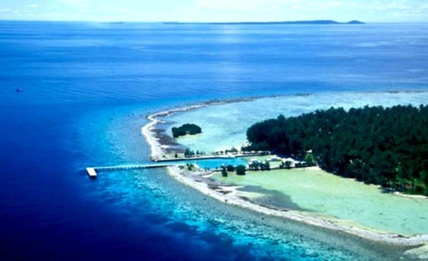

Berjarak sekitar 83 km di arah barat laut Jepara, Karimunjawa adalah sebuah cagar alam laut yang dilindungi dan kini disebut sebagai Taman Nasional Karimunjawa. Karimunjawa adalah sebuah destinasi wisata yang populer di Indonesia, adalah pula salah satu tempat wisata di Jepara yang sangat terkenal. Pengalaman wisata laut di Jawa Tengah paling menakjubkan dapat Anda temukan di Karimunjawa.
 Sebagai salah satu tempat wisata Jawa Tengah yang terkenal, Karimunjawa selalu ramai dengan kunjungan wisatawan. Karakteristik seluruh pantainya memiliki hamparan pasir putih dengan garis pantai yang panjang. Oleh karenanya, berjemur di tepian pantai adalah salah satu kegiatan yang disukai banyak wisatawan di tempat ini.
Selain itu, olahraga air seperti menyelam, snorkeling, memancing, berenang, atau menjelajahi laut yang jernih adalah pilihan menarik lainnya di Karimunjawa. Keunikan budaya dan tradisi penduduk lokal di sana adalah objek interaksi sosial yang menarik selama kunjungan wisata Anda.
Alamat: Jepara, Jawa Tengah